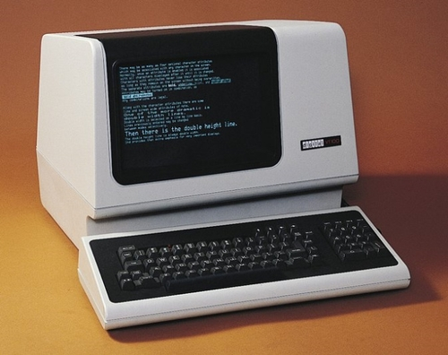
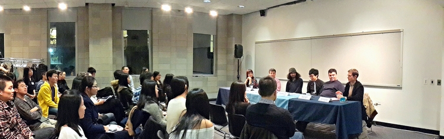

Microsoft and Apple have made personal computer a life partner for everyone. But despite the fact that many of us spend half of our waking hours with our laptops, do you really know your dear friend well?
Have you ever wondered how your laptop works its magic? And do you want to learn more about the secret power hidden inside this big black box? For those who are curious, the QASR Shell Scripting Workshop Series is designed to help get your foot in the door.
The first Workshop, Intro to the Unix Command Line, took place on November 18th. Our beloved QASR member, Greg Werbin, led us into a fantastic journey of Unix Command Line. Open the terminal, type in pwd, and a whole new world unfolds in front of you (It’s actually the old world’s hidden face ^^). In two hours, we got around in the file system, learnt to get help, to organize files, to manage packages, to “talk” with other computers using SSH, to deal with simple text, and many many more. Everyone left the room with fresh skills, the delight of exploring, and a lingering good taste of Hawaiian pizza.
The second workshop, Data Processing on the Command Line, happened on November 25th. Built upon the first workshop, this adventure is led by the indefatigable Nick Ursa. It’s another two hours intense learning of how Bash and the Unix environment can be used for data processing, but with a taste of Unix history woven into it. My personal favorite:
I now feel like commands are not cold dead things but living creatures.“Don’t be afraid of or skip error messages, it’s actually some genius computer engineers going back 40 years trying to talk to you.”
Our first two Shell Scripting workshops are just a start. Gazillions more things await inside the big black box. And let’s do not go gentle.
On Friday Nov. 7th, the QASR PhD Panel welcomed 6 warriors to share their delightful PhD trudge starting from the application. Despite their diverse disciplinary backgrounds and the different program phases they are at, listeners as me are able to feel something universal.

Feihan Lu, now a 3rd year PhD candidate in Statistics at Columbia, is an elegant lady with a tough spirit. When someone asked at the panel, “If you were able to do the PhD all over again, what would you have done differently?” She smiled and replied, “If you ask me the question during my first PhD year, I would tell you I shouldn’t have applied for PhD.” Feihan worked as a data analyst before she started the PhD program, and the first year is just madly stressful. “You forget all the formulas, you suddenly have piles of homework to do, and you fall back as a poor student.” But she survived it and found all her efforts extremely rewarding.
Indeed, doing a PhD is never easy. But if it’s the path of heart, try your best.
For people who are determined to pursue a PhD, here are 7 tips the QASR PhD panelists want to share with you.
A path is only a path, and there is no affront, to oneself or to others, in dropping it if that is what your heart tells you. Look at every path closely and deliberately. Try it as many times as you think necessary. Then ask yourself alone, one question. Does this path have a heart? If it does, the path is good; if it doesn’t it is of no use.
The Ph.D. Grind – A funny deep concise book about the Ph.D. experience, written by Philip Guo.
PhD comics – PhDs are versatile and lovely.
What PhD Really Stands For – Funny explanation for the word Ph.D.